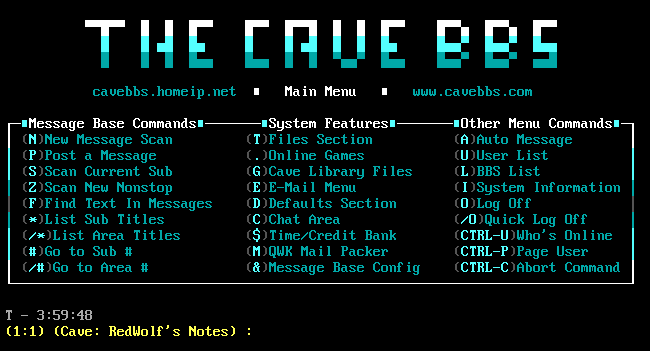
BBS Dial-Up Forums
Early online communities accessed through dial-up modems, allowing users to exchange messages and files.
Year: 1990s
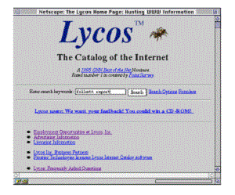
Lycos Search
One of the first search engines, launched in 1994, known for indexing millions of documents.
Year: 1994

WebCrawler
The first full-text search engine, introduced in 1994, allowing users to search entire webpages.
Year: 1994
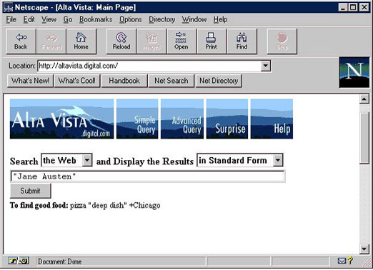
AltaVista Search
A groundbreaking search engine launched in 1995, known for its speed and innovative indexing.
Year: 1995
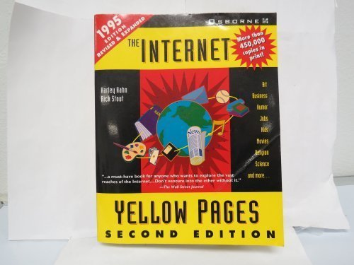
Internet Yellow Pages
A printed directory from 1995, listing websites before search engines became widely used.
Year: 1995
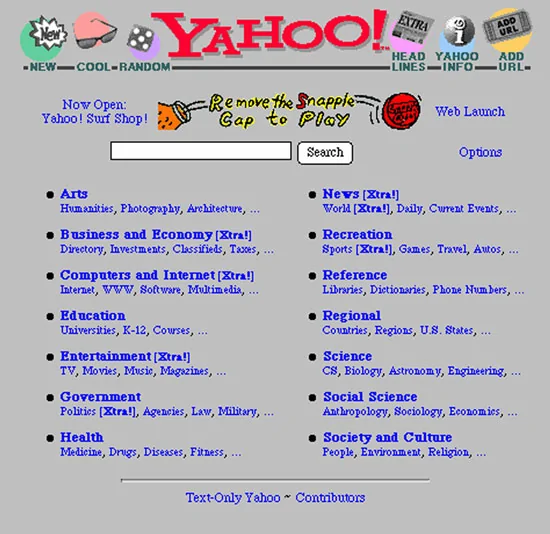
Yahoo
Originally a web directory, Yahoo evolved into a search engine and one of the most visited sites of the late 1990s.
Year: 1995
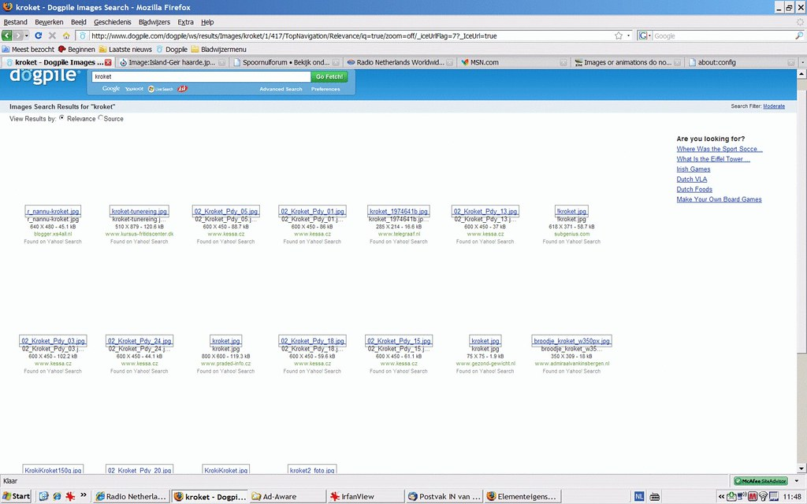
Dogpile
A metasearch engine launched in 1996, aggregating results from multiple search engines.
Year: 1996
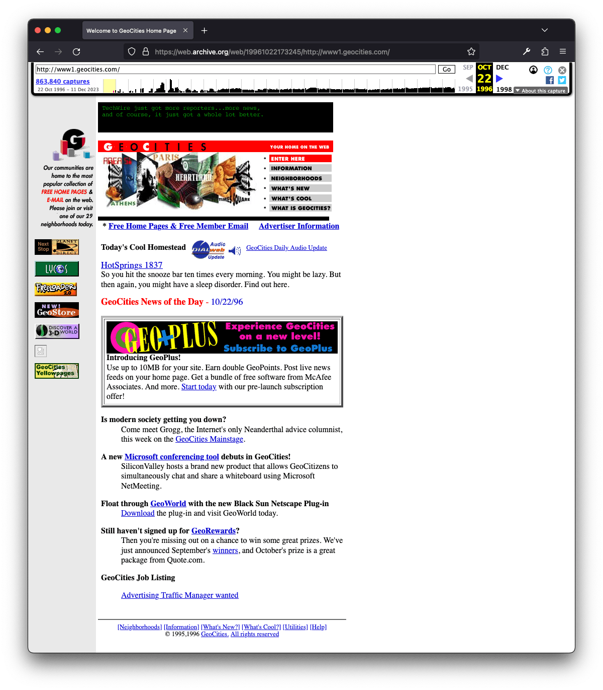
Geocities
A web hosting service that empowered users to build personal websites.
Era: 1996-2000s
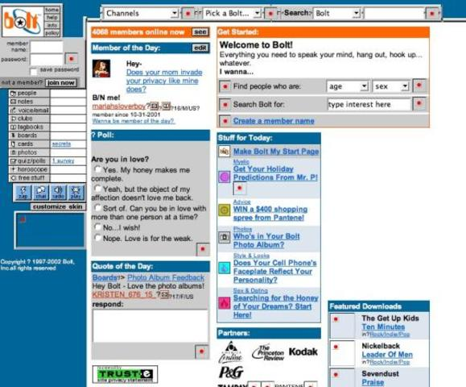
Bolt.com
One of the first social networking sites, popular in the early 2000s.
Era: 1996-2008
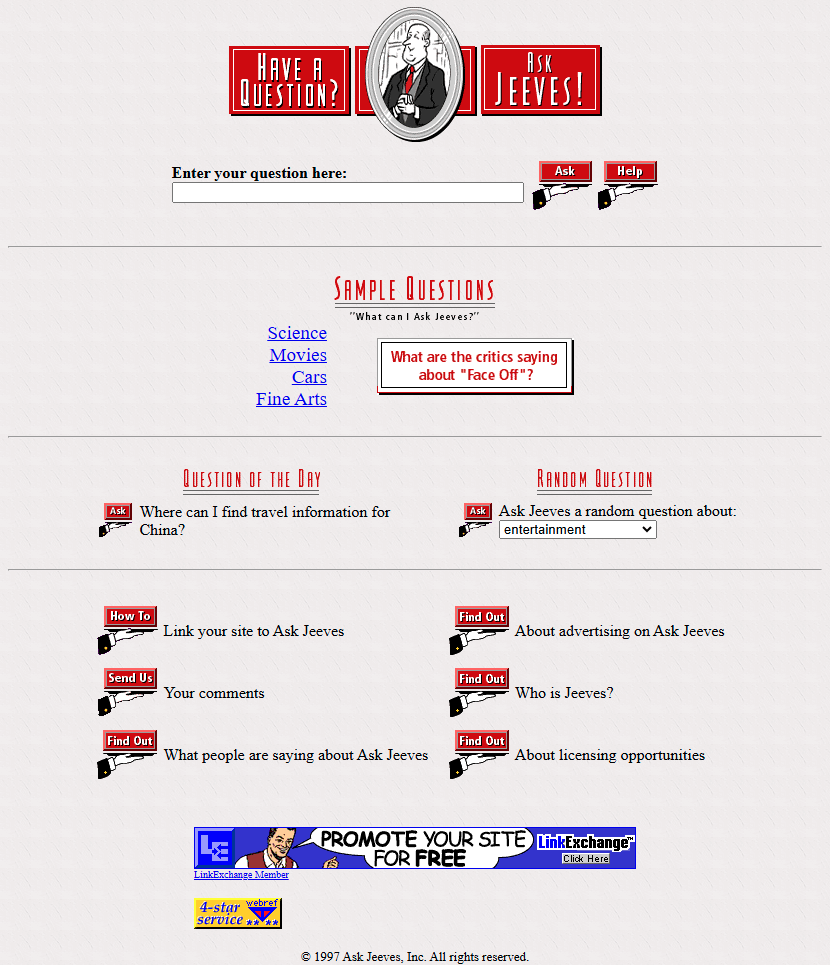
Ask Jeeves
A question-based search engine launched in 1997, featuring a virtual butler character.
Year: 1997
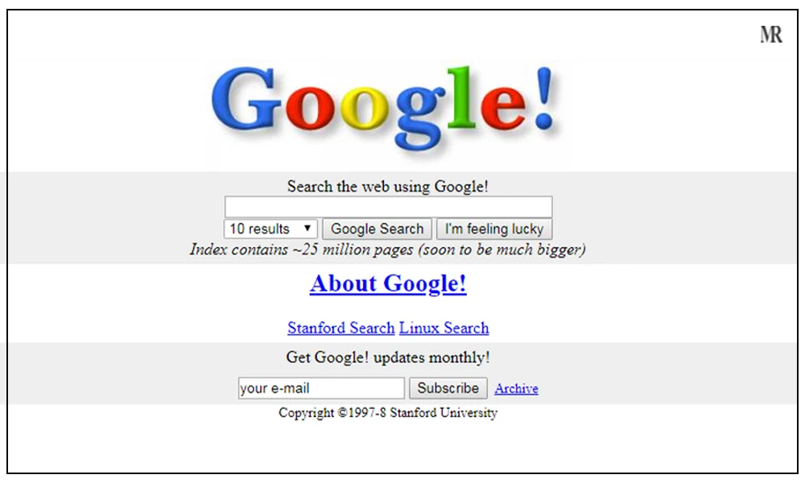
Google Search
Founded in 1997, Google revolutionized search with its PageRank algorithm and clean interface.
Year: 1997
Xanga
A blogging and social networking site from the late 90s and early 2000s.
Era: 1999-2013
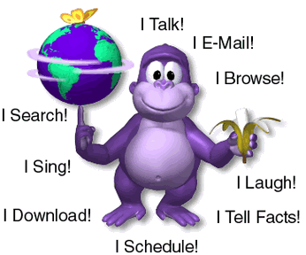
Bonzi Buddy
A talking virtual assistant popular in the early 2000s.
Era: 1999-2005
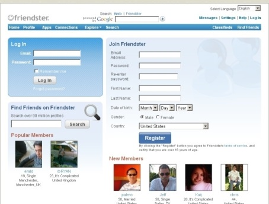
Friendster
A pioneering social networking site before the rise of Facebook.
Era: 2003-2018
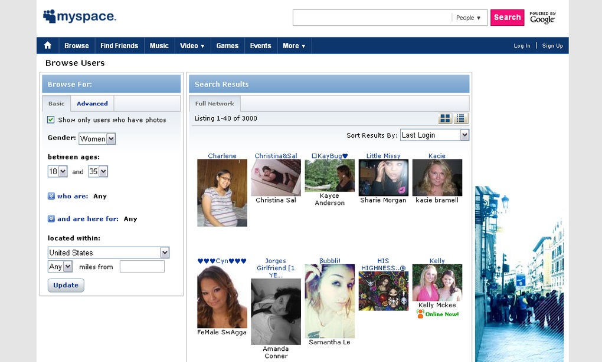
MySpace
The dominant social networking platform in the mid-2000s.
Era: 2003-Present
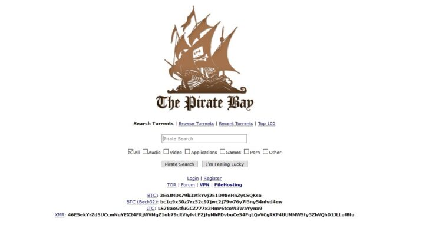
The Pirate Bay
A controversial torrent site that facilitated peer-to-peer file sharing.
Year: 2003
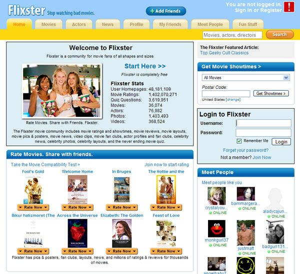
Flixster
A movie-sharing social platform that gained popularity in the 2000s.
Era: 2006-2018